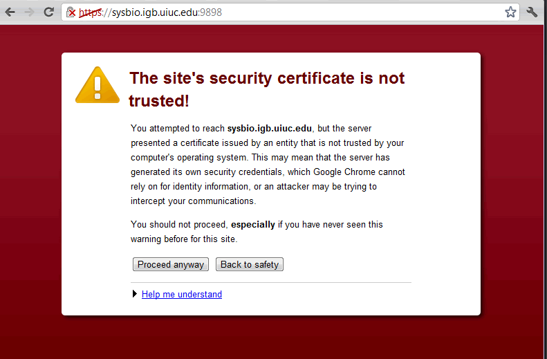

Certificates for sysbio.igb.uiuc.edu
All SSL connection to sysbio.igb.uiuc.edu will require a certificate to proceed and because we use a self-signed certificate, most browsers will show a warning about the certificate being not trusted like below.

To eliminate such warning, you can take the following two steps to import the self-signed certificate of sysbio.igb.uiuc.edu as a "Trusted root CA certificate".
Download the Certificate File
The certificate file can be downloaded here. Save it to your computer to proceed.
Import the Certificate File as Root CA
Windows
Open the certificate file first, then follow these steps from Step 5.
Mac
Linux
Directly copying the certificate file to /etc/ssl/certs/ or /etc/ssl/ may work, but it may depend on the settings of your machine.